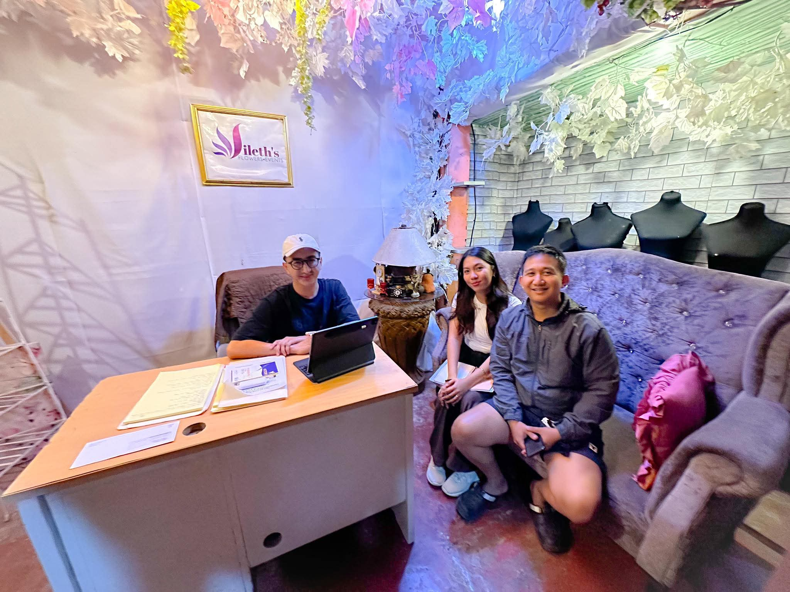
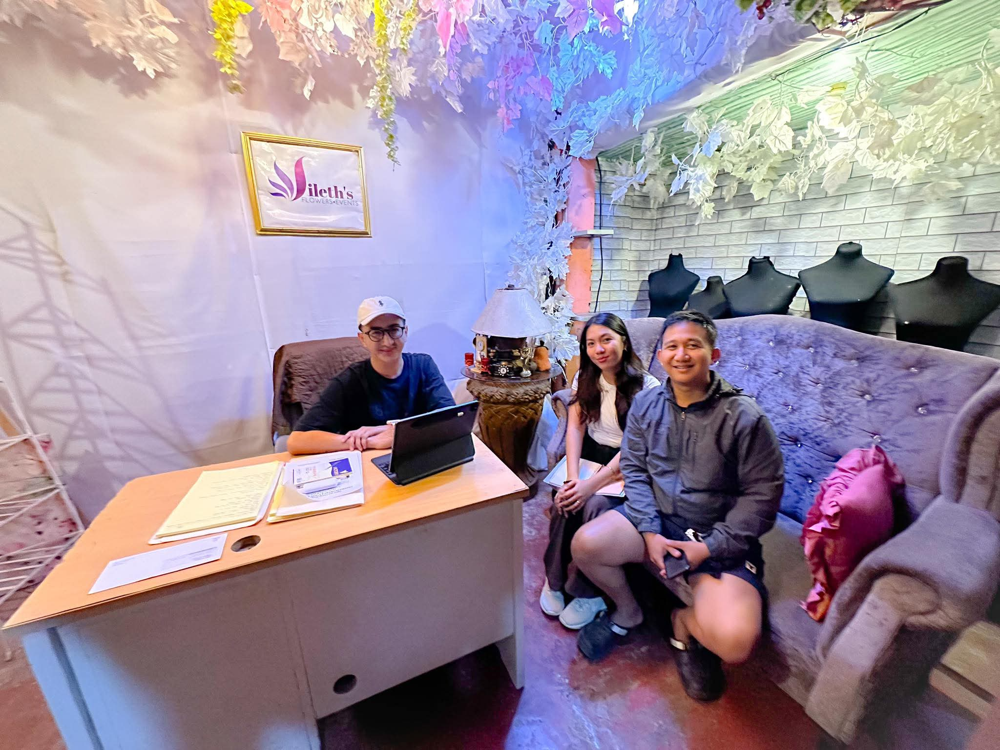
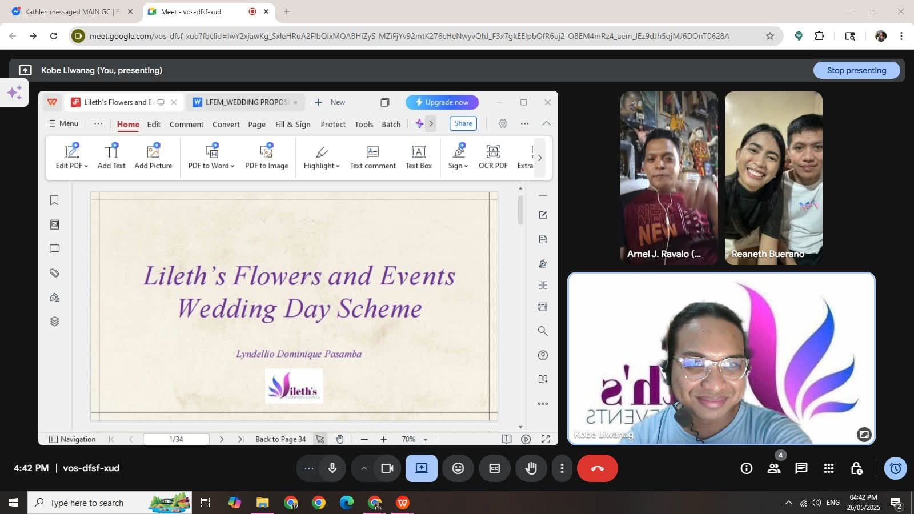
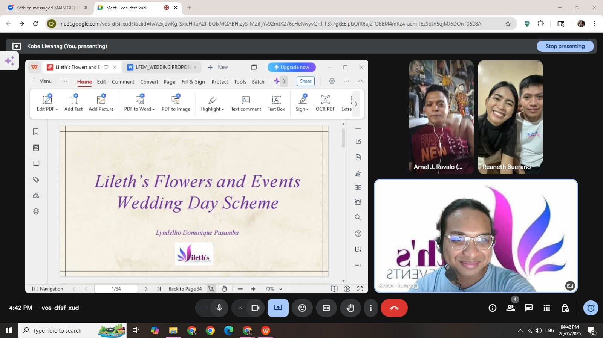

“Face-to-face”
For clients who love hands-on collaboration, our face-to-face meetings provide an opportunity to connect deeply. You can explore event concepts up close, timeline, and checklist while building a genuine relationship with our team. These meetings are often filled with laughter, excitement, and creative exchange — moments that help us craft events that truly reflect your personality and style.
 
